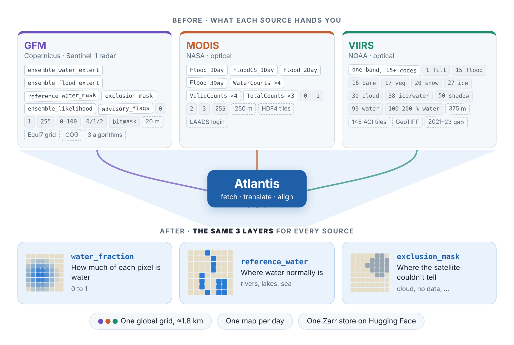

How Atlantis works
This page is the starting point if you are new to Atlantis. It explains what the data means before you run anything. The first half is the high-level picture. The second half goes source by source and shows exactly how each native pixel becomes an Atlantis value.
If you just want to install and run something, go to Pixi setup and come back here when the output needs explaining.
In one picture

Three satellite products map surface water. Each has its own layers, value codes, pixel size, tiling and file format. Atlantis fetches them, translates their codes into the same few layers, and puts everything on one global grid, one map per day.
The big ideas
Two ways a satellite sees water
| Optical (MODIS, VIIRS) | Radar / SAR (GFM on Sentinel-1) | |
|---|---|---|
| How it works | Measures reflected sunlight. Water absorbs infrared, so it looks dark. | Sends its own microwave pulse. Calm water mirrors it away, so it looks dark. |
| Strengths | Daily, global, long archives | Sees through clouds and at night; 20 m detail |
| Weaknesses | Blind under clouds; shadows can look like water; 250–375 m pixels | A pass only every few days; struggles in cities, forests and mountains |
The sources are strong exactly where the others are weak. That is the reason to use them together.
Water is not the same as flood
Satellites see water. A flood is water where there normally isn't any. Atlantis therefore stores both:
water_fraction: all water seen that day, including rivers, lakes and sea.reference_water: where water normally is.
Flood is roughly water minus reference water. Keeping both lets you choose what "normal" means for your use case.
The three core layers
Every source produces the same three core layers:
| Layer | Question it answers | Values |
|---|---|---|
water_fraction |
How much of this pixel is water today? | 0 to 1 (stored as 0–100) |
reference_water |
Is this normally water? | 0/1 for MODIS and VIIRS; 0/1/2 (none, permanent, seasonal) for GFM |
exclusion_mask |
Should I ignore this pixel? | 0/1 for MODIS and VIIRS; GFM's own codes for GFM |
Some sources add extras: MODIS has recurring_flood, and VIIRS has
cloud_mask, snow_ice and shadow. The full list is in
Layers.
One shared grid
All outputs are on the same global grid:
- 1 arcminute pixels (1/60°, about 1.85 km at the equator), EPSG:4326
- 10 800 × 21 600 pixels covering the whole globe
- the same grid as ECMWF's CaMa-Flood (
Globe_flood_area) - one slice per day
The same pixel index is the same patch of ground in every source.
What water_fraction means
One Atlantis pixel holds many native pixels: about 64 MODIS pixels, about 25 VIIRS pixels, or about 530 GFM pixels (after GFM is pooled to 80 m). Atlantis turns each native pixel into a water value between 0 and 1, marks the ones that could not be observed (cloud, no data), and averages the rest.
For example, if 14 native pixels inside one output pixel were observed and 7
of them are water, water_fraction is 7 / 14 = 0.50. The unobserved pixels
are ignored, not counted as dry. If nothing was observed, the value is
missing.
water_fraction is computed per output pixel, never per tile or per file.
How the archive is built
flowchart LR
A[Catalogue<br/>source files per day] --> B[Process each file<br/>classify native pixels,<br/>average to 1 arcmin]
B --> C[Encode<br/>fraction → uint8 percent,<br/>missing = 255]
C --> D[Write<br/>yearly Zarr cubes,<br/>one slot per day]
D --> E[Merge + re-shard<br/>one multi-year store]
E --> F[Publish<br/>Hugging Face<br/>data.zarr + stac/]The published dataset is
opageo/atlantis on Hugging Face:
one Zarr v3 store with a group per source (gfm/, modis/, viirs/) and a
STAC catalogue. See Inside the cube below for the layout.
Source by source
This diagram summarises the rest of the page: what is fetched from each source, the recipe applied per pixel, and what ends up in the cube.

Click the image to open it full size.
| MODIS | VIIRS | GFM | |
|---|---|---|---|
| Provider | NASA (LANCE / LAADS DAAC) | NOAA JPSS (public AWS bucket noaa-jpss) |
Copernicus EMS, via the EODC STAC API |
| Sensor | Optical, Terra + Aqua | Optical, Suomi-NPP + NOAA-20 | C-band radar, Sentinel-1 |
| Native pixel | ~250 m, 10° × 10° tiles | 375 m, 15° × 15° tiles | 20 m, Equi7 tiles |
| Revisit | Daily (we use a 2-day composite) | Daily | Every few days |
| Format | HDF4 | GeoTIFF, one band of codes | Cloud-optimised GeoTIFFs |
| Access | Free Earthdata token | Anonymous | Public |
MODIS: NASA's Global Flood Product (MCDWD)
How it is measured. For every Terra and Aqua pass, NASA applies a reflectance test: a pixel is water if it is dark in short-wave infrared, not too bright in red, and darker in near-infrared than in red (vegetation is the opposite). Clouds and their shadows move between passes while floods stay, so the 2-day composite only keeps water seen at least twice in two days. Pixels more than 30 m above the nearest stream (HAND) are masked as insufficient data. Water is then labelled against a reference: normal surface water, recurring (seasonal) flood, or unusual flood.
What we fetch. One layer from the HDF4 file, Flood_2Day_250m (the "F2"
composite, NASA's recommended default):
| Code | Meaning |
|---|---|
0 |
No water |
1 |
Surface (reference) water |
2 |
Recurring flood |
3 |
Unusual flood |
255 |
Insufficient data (cloud, shadow, high ground) |
What Atlantis does.
- Codes
1,2,3→ 1.0;0→ 0.0;255→ missing. - Average onto the 1-arcmin grid, skipping missing pixels.
- Masks come straight from the codes:
reference_waterwhere1or2,recurring_floodwhere2,exclusion_maskwhere255. Masks take the most common value inside the output pixel.
Where it goes wrong. Clouds hide the ground and their shadows can look like water. 250 m pixels miss narrow rivers and floods that drain within a day. Water under tree canopy or between buildings is invisible. Dark surfaces such as burn scars or lava can pass the water test. New reservoirs can show up as flood until the reference catches up.
Also available, not used. The 1-day (F1), cloud-shadow screened 1-day
(F1C) and 3-day (F3) composites are selectable with --modis-composite. The
file also has 11 count layers (potential, clear-sky and water observations per
window) that the default pipeline does not load.
More detail: MODIS overview.
VIIRS: NOAA's Flood Mapping product (VFM)
How it is measured. NOAA classifies each pixel as cloud, snow/ice, clear land or water using visible, near-infrared, short-wave infrared and thermal bands, with a decision tree trained on about 600 000 samples. Cloud and terrain shadows are removed. For flood pixels, NOAA then estimates how much of the pixel is water by linear mixing: water is dark in short-wave infrared, so a pixel's reflectance, placed between nearby pure-land and pure-water pixels, gives its water share. The daily product keeps the maximum over the day's passes.
What we fetch. A single GeoTIFF band where each code means something different:
| Code | Meaning |
|---|---|
0, 1 |
No data / fill |
16 |
Bare land |
17 |
Vegetation |
20 |
Snow / ice |
27, 38 |
River or lake ice; mixed ice and water |
30 |
Cloud |
50 |
Cloud or terrain shadow |
99 |
Normal water (reference) |
15 |
Flood, fraction not computed |
100–200 |
Flood, water share = (code − 100)% |
What Atlantis does.
100–200→ (code − 100) / 100.99and15→ 1.0. Bare land and vegetation (16,17) → 0.0.- Fill, cloud, snow/ice and shadow → missing (and
exclusion_mask = 1). - Average onto the 1-arcmin grid, skipping missing pixels.
reference_water is code 99. VIIRS is the only source with separate
cloud_mask, snow_ice and shadow layers, which tell you why a pixel is
missing.
Where it goes wrong. Same cloud problem as MODIS, and shadow removal depends on guessing cloud height. The fraction is designed for pixels that are at least 25% water. Volcanic rock, burn scars and hazy cities can be called water. Keeping the daily maximum can overstate flooding if one pass is wrong.
Coverage gap. NOAA's public bucket has no VFM data from 2021 to 9 August 2023.
Also available, not used. A 5-day maximum composite (VFM_5day_GLB) with
far fewer cloud gaps, and NetCDF and shapefile versions of the same maps.
More detail: VIIRS overview.
GFM: Copernicus Global Flood Monitoring on Sentinel-1
How it is measured. Sentinel-1 measures radar backscatter at 20 m. Calm water reflects the pulse away from the satellite and looks dark. Three independent algorithms look for that signal:
- LIST (change detection): flags pixels that got much darker than in an earlier image of the same place.
- DLR (automatic threshold): finds the brightness cut-off that best separates the dark water peak from the bright land peak in each scene.
- TU Wien (pixel history): learns from years of data what each pixel normally looks like, wet or dry, and compares today's value to that.
Their majority vote gives the flood map, and their confidences give a 0–100
likelihood. The water map (ensemble_water_extent) uses LIST and DLR
only, because TU Wien only detects temporary flooding.
What we fetch.
| Band | Values | Meaning |
|---|---|---|
ensemble_water_extent |
0 / 1 / 255 | All open water seen in one Sentinel-1 pass. Feeds water_fraction. |
ensemble_flood_extent |
0 / 1 / 255 | Flood only |
reference_water_mask |
0 / 1 / 2 / 255 | None, permanent, seasonal (per calendar month), from a 2017–2021 baseline |
exclusion_mask |
native codes | Where radar flood mapping is unreliable (static) |
ensemble_likelihood |
0–100 | Confidence: 0 = surely dry, 50 = threshold, 100 = surely flooded |
advisory_flags |
bitmask | 1 = low backscatter region (snow, frozen or dry soil), 2 = rough water (wind, rain) |
What Atlantis does.
- Build 0/1 water and "valid" (observed) masks at 20 m.
- Mean-pool by 4 to 80 m. Each 80 m pixel is then a fraction. This step mainly cuts processing cost (16× fewer pixels to reproject); since the final value is an average, it barely changes the result.
- Reproject, and across all passes on the same date compute water count ÷ valid count.
- Average onto the 1-arcmin grid.
reference_water keeps GFM's three classes. exclusion_mask keeps GFM's own
codes. It is not a 0/1 mask like MODIS and VIIRS.
The exclusion mask. GFM excludes places where radar cannot map floods reliably: dense forest and built-up areas (radar can't see water under canopy or between buildings), places that are dark most of the time anyway (sand, dry soil, tarmac), ground 10 m or more above the nearest drainage, radar shadow behind steep slopes, and areas with too few Sentinel-1 observations.
Where it goes wrong. Wind-roughened water looks bright like land, which is what the advisory flag warns about. Flooded vegetation and flooded streets can go undetected.
Only around labelled events. GFM in the Atlantis dataset is not global and daily. It was processed inside the date windows and areas of two benchmark collections, GEOID-Flood and KuroSiwo.
Also available, not stored. ensemble_likelihood and advisory_flags are
fetched but not written to the cube. Each algorithm's own flood map is also
published by GFM; disagreement between them is a natural uncertainty signal.
More detail: GFM overview.
Inside the cube
Each source group has dimensions (time, y, x), one slot per day.
| Variable | MODIS | VIIRS | GFM | How to read it |
|---|---|---|---|---|
water_fraction |
✓ | ✓ (sub-pixel) | ✓ (from counts) | Stored 0–100; decodes to 0–1. Includes normal water. |
reference_water |
0/1 | 0/1 | 0 / 1 permanent / 2 seasonal | Subtract from water to get flood. |
exclusion_mask |
0/1 | 0/1 | native GFM codes | 1 = could not observe (MODIS/VIIRS). |
recurring_flood |
✓ | – | – | MODIS seasonal flooding. |
cloud_mask, snow_ice, shadow |
– | ✓ | – | Why a VIIRS pixel is missing. |
Storage.
- Zarr v3, all variables
uint8, fill value 255. water_fractionhasscale_factor = 0.01.- Read unit (inner chunk): 1 day × 256 × 256 pixels, a natural ML training patch.
- Pixel centres: lon = −180 + (i + 0.5) / 60, lat = 90 − (j + 0.5) / 60, rows north to south.
Reading tip. Opening the store with xarray's defaults turns every variable
into float with NaN for 255, including the masks. Use mask_and_scale=False
if you want the raw uint8 class codes, and apply the 0.01 scale to
water_fraction yourself.
The full storage spec is in the Zarr datacube spec.
Before you combine sources
The layers share names, but not always meanings:
| Trap | What differs |
|---|---|
reference_water |
GFM: none / permanent / seasonal. MODIS, VIIRS: yes/no. |
0 in masks |
GFM 0 = seen and dry. For MODIS and VIIRS, 0 can also mean "not seen"; check exclusion_mask. |
exclusion_mask |
MODIS, VIIRS: "couldn't see today". GFM: "radar is unreliable here". |
| "Water" | Three different estimators; expect systematic offsets between sources. |
| Time | MODIS = 2-day composite, VIIRS = 1 day, GFM = pass days inside event windows. |
Layers: cross-source gotchas has the details.
Where to go next
- Pixi setup: install and run the Valencia 2024 demo.
- Credentials & setup: Earthdata token and other accounts.
- Layers: every native and derived layer, generated from the code.
- CLI reference and end-to-end examples.
- Per-source deep dives: MODIS, VIIRS, GFM.
Sources for the measurement descriptions
- NASA MCDWD User Guide (MODIS/VIIRS NRT Global Flood Product).
- NOAA VIIRS Flood Mapping ATBD v1.0.
- Copernicus GFM Product Definition Document, and "Estimating Ensemble Likelihoods for the Sentinel-1-Based Global Flood Monitoring Product of the Copernicus Emergency Management Service", IEEE JSTARS, 2023.